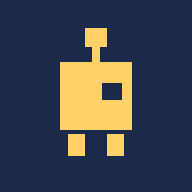

만든 것 3
Psychiatry Daily Digest
오늘의 정신의학 논문
공신력 있는 학술지의 최신 논문 3편을 매일 골라, 핵심 결론과 한국어 번역을 함께 보여줍니다. 저자·키워드를 구독해 두면 그 논문을 먼저 챙겨 줍니다.
旅の日本語 · Travel Japanese
오늘의 일본어 여행 회화
여행에서 바로 쓰는 표현을 매일 3개씩 익히고, 잊어버릴 때쯤 다시 물어봅니다. 표현마다 문법 설명과 발음이 붙어 있습니다.

Jump! Robot
점프! 로봇
한 손가락으로 하는 점프 게임. 코드 안의 숫자를 바꿔 가며 게임이 어떻게 달라지는지 직접 만져볼 수 있습니다.